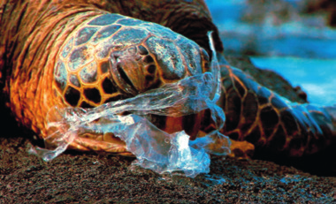
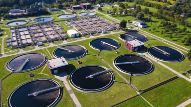

Observa la siguiente imagen y responde.

Tortuga con plástico
¿Qué consecuencias puede tener para los animales marinos el vertido de contaminantes sólidos al mar?
Un recurso renovable es el que se regenera de forma natural en un corto periodo de tiempo. ¿Crees que el agua dulce es un recurso renovable? Si tu respuesta es afirmativa, explica cómo se produce su renovación.
Algunas regiones de España disponen de agua abundante, mientras que otras son deficitarias. Para compensar el déficit de agua, se construyen desaladoras y canales de trasvase.
a. ¿Qué son las desaladoras y los canales de trasvase?
b. ¿Cuáles son las ventajas e inconvenientes que tienen estas formas de obtener agua dulce?
Cuando utilizamos agua para lavar la ropa o para regar las macetas, ¿estamos haciendo un uso consumitivo del agua? Justifica tu respuesta.
Elabora una tabla que tenga dos columnas: en la columna de la izquierda, escribe acciones cotidianas para cuya realización se necesita agua; en la de derecha, indica si cada uso es consumitivo o no consumitivo.
Louis Pasteur afirmó que "debemos el 90 % de nuestras enfermedades".
a. Investiga quién era Louis Pasteur. Cita las fuentes consultadas.
b. ¿Qué quiso decir con esa afirmación?
Indica cuál es la finalidad de la potabilización del agua. ¿De qué etapas consta este proceso?
El agua que podemos beber sin riesgo para la salud se conoce como agua potable. ¿Cuáles son las características que debe poseer el agua a fin de ser apta para el consumo humano?
Investiga cómo se llaman los complejos en los que se potabiliza el agua y averigua dónde se encuentra y que abastece de agua potable a la localidad. Indica las fuentes consultadas.
Observa esta imagen e investiga para responder a las siguientes cuestiones. Indica las fuentes consultadas.

Vista aérea de una planta de tratamiento de aguas residuales
¿Qué es una estación depuradora de aguas residuales (EDAR)?
¿Por qué es necesaria su existencia en cada localidad?
¿Cuáles son las etapas de su proceso de funcionamiento?
¿En qué consiste la depuración de aguas residuales mediante lagunaje?
¿Cuáles son las ventajas e inconvenientes que tiene la depuración de aguas residuales mediante lagunaje en comparación con la depuración mediante EDAR?
Escribe tu visión crítica sobre la depuración de aguas residuales, indicando la opinión que te generan después de todo lo investigado.
Gonzalo observa que el grifo del lavabo de su casa gotea y le cuenta a su madre, quien le dice: "No te preocupes, eso solo gotea". Un año después, él sigue goteando.
Si el goteo se produce a una velocidad de una gota por segundo y cada gota contiene 0,5 ml de agua, ¿cuántos litros de agua ha despilfarrado la familia de Gonzalo desde que él se dio cuenta de la lavera?
¿Qué supone esta actitud para la gestión sostenible de nuestro planeta?
¿Cómo deberías haber actuado esta familia en dicha situación?
Haz una tabla en la que recojas las acciones que realizas a diario suponiendo un despilfarro de agua. Señala también qué conducta deberías adoptar para evitar ese derroche.
Contesta las siguientes preguntas sobre las etiquetas ecológicas.
a. ¿Qué son las etiquetas ecológicas?
b. Describe brevemente los tipos de etiquetas ecológicas que existen.
c. ¿Qué tipo de etiqueta ecológica se representa en esta imagen? Justifica tu respuesta.
De los 17 Objetivos de Desarrollo Sostenible de la Agenda 2030, ¿cuáles de ellos están presentes en tu vida diaria? Argumenta tu respuesta.